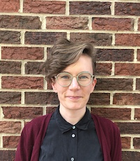
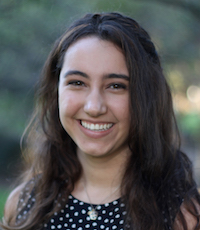
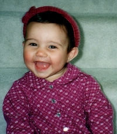
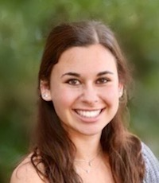

People
 Zachary T. Kern |
Most recently she was a Research Professor at the University of Rochester's Brain and CogSci Department. Dr. Bergelson's work has been funded by the NSF and NIH; she is most recently the recipient of an NIH Early Independence Award. Dr. Bergelson thinks figuring out how babies learn language is just about the coolest question out there. |
Vitaly Bergelson |

|
Federica also loves baking and traveling. |

|

|
He recently completed a PhD in the Computational Cognitive Science Lab at UC Berkeley, focusing on how to represent adults’ and children’s abstract knowledge of language with probabilistic graphical models. |

|
|

|
|

|
|
|
Gladys likes to walk, sing, and walk while singing. Sometimes she even sings while walking. |
|

|
Charlotte is interested in how babies learn the sounds of their language, and how knowledge of those sounds helps them learn their first words. She also loves biking and knitting, and always reads the book before she watches the movie version. |

|

|
|

|

|
Erin wants to better understand language processing and acquisition for children with sensory impairments. In her free time, she enjoys rock climbing, yoga, smiling (recreationally), and embroidering pictures of bugs. |

|

|
Throughout the week, you may find Sarah studying in the library, rehearsing with her dance organization Defining Movement, or teaching Sunday School at her church. She loves flowers, reading, and baking. |

|
|

|
In her free time at Duke, she loves attending RUF, cheering on Duke basketball, and watching super cheesy rom-coms. |

|
|
|
|

|

|
In her free time, Janani loves to spend time with her friends and family, read books, and play music. |

|

|
Outside of school he enjoys learning Norwegian, playing Euphonium in the wind symphony, cooking, and fencing. |

|
|

|
Sophie also loves working with older children, whether it be through tutoring, mentoring, or being a camp counselor during the summer. Here at Duke, she is also a Baldwin Scholar and an America Reads America Counts tutor. She loves to go to the beach, binge watch TV shows, and is always hungry for a great pizza. |
|
Lab Alumni
- Estelle He '20, programming research assistant, 2016-2019
- Webster Bei '20, programming research assistant, 2016-2019
- Meghan Beck, co-op visiting research assistant, 2019
- Daniela Mayorga-Young '19, research assistant, 2017-2019
- Chandler Richards '19, research assistant, 2017-2019
- Katya Khlystova '19, research assistant, 2017-2019
- Emma Zhang, high school research assistant, 2018
- Natasha Derezinski-Choo '18, research assistant, 2016-2018
- Micaela Brewington, research assistant, 2016-2018
- Naseem Dillman-Hasso, summer research intern, 2018
- Natasha Vernooij, summer research intern, 2018
- Ellie Breitfeld, summer research intern, 2018
- Savanna Groft, research assistant, 2016-2018
- Erich Hess, high school research assistant, 2018
- Andrei Amatuni, lab technician, 2015-2018
- Afua Ansah, research assistant, 2016-2018
- Angela Tawfik, research assistant, 2017-2018
- Reena Jasani, research assistant, 2016-2017
- Alexis Aberman, high school research assistant, 2017
- Maia Donald, high school research assistant, 2017
- Kelsey Shelofsky, research assistant, 2017
- Claire Patrick, high school research assistant, 2017
- Dr. Catherine Laing, postdoctoral researcher, 2016-2017
- Emmaline Drew, graduate practicum student, 2017
- Hannah Ballock, research assistant and independent study student, 2016-2017
- Ryan Bloom, programming research assistant, 2017
- Nick Groszewski, programming research assistant, 2017
- Liwen Zhang, programming research assistant, 2016-2017
- Cristopher Alvarado, high school research assistant, 2016